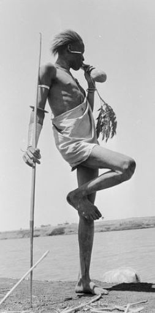

The Construction of Actions
Vitruvian Man - Leonardo Da Vinci

Nuer Warrior - South Sudan
The definition of our bodies lies within several oppositions - “feminine” vs. “masculine”, biological vs. social, or perceived vs. accepted. In extension, the ways in which we act in space can also be examined through contradictions - society creates norms for our actions, yet these constraints limit us. As Bordeau asserts, in “Belief and the Body”, our actions can be inherited, observed or learned, which further suggests their nature as a construct. However, this codependent definition that our bodies rely on is the pivot point in which we find the desire to freely express our identity. Here Da Vinci is cited as a contrast to an example that Bordeau includes. The Vitruvian Man was intended to explore the ideal proportions of a man and angles of the limbs in space. Through this intention one understands the social and biological characteristics that have been considered as a standard, while seeing the beginnings of measuring calculations of the body. In addition to describing actions, Bordeau discusses how people naturally take up space, which are additionally defined through constructs. The second image above depicts one example he cites - a Nuer Warrior from South Sudan in a natural resting position.
Exploitation of the Body

Serena Williams, 2018 US Open - Mark Knight
Samuel Morton (1799-1851), Race: The Power of an Illusion, Episode 1
Through the development of science and the capitalist society, the body has been subjected to exploitation in order to define race and justify slavery. This categorization and classification of physical characteristics has given those in power the control over those subjected, while this power often lies within its interpretation. A contradiction that arises in Bordeau’s text gives way to the inclusion of these next set of images. He states, “here is a personal observation: a little girl did not know how to spit and this made every cold she had worse...I taught her to spit. I gave her four sous per spit.” (Mauss, 472). This anecdote brings up the double standard in which women are often shamed for presenting as, or acting “masculine”. Society often holds men and women to different standards depending on the setting. One area in which this is particularly evident is within the sports arena - a visceral example of this is the way that Serena Williams was portrayed after her loss in the 2018 U.S. Open. These depictions have deep and ingrained roots, as physician Samuel Morton has compared human facial proportions to animals. The aspect of race is also critical here as one can see how certain stereotypes are still evident today. In this case, we can further understand how the tension between perceived characteristics and self identification brings out the desire to break away from these associations in order to be understood as your authentic self.
The Body & Landscape
The temporal and transitional aspects of our bodies serves as the link between them and the idea of a landscape. As Mauss discusses in "Techniques of the Body", we use our bodies as a way to make sense of time and reality in order to justify consciousness. They are a vehicle for physical expression as they give us the ability to act out our emotions. Just as our bodies can be subjected by internal and external factors, a landscape can also be exploited in these ways. In “The Right to Landscape”, the authors cite that the amorphous and multifaceted definitions of landscape lends to its power. The connection between our bodies and landscape asserts that the right to landscape is inherently tied to our freedom. However, the intersection of politics and aesthetics that is embedded within architecture suggests an endless connection between the body, identity, and landscape.